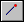

Mirror Assembly Feature command bar
- Main Steps
-
- Select Features Step
-
Defines the features you want to mirror.
- Plane Step
-
Defines the plane about which the copy will be mirrored. You can select a planar face or a reference plane.
- Select Parts Step
-
Defines the parts you want to modify. All the parts that were modified by the original feature are automatically selected. You can add or remove parts from the default select set. When you add parts to the select set, a message is displayed to inform you that the parts you are adding will also be added to the scope of the original feature, if possible.
- Finish/Cancel
-
This button changes function as you move through the feature construction process. The Finish button constructs the feature using input provided in the other steps. After you construct the feature, you can edit it by re-selecting the appropriate step on the command bar. The Cancel button discards any input and exits the command.
- Select Features Step Options
-
- Fast
-
Constructs the feature using the Fast option. The Fast option processes very quickly, but it cannot be used if any members encounter different geometry than the feature being patterned or mirrored. If a fast pattern or mirror fails, simply select the Smart option and recompute the feature.
- Smart
-
Constructs the feature using the Smart option. The Smart option takes longer to process, but can handle more cases. The Smart option can be used when individual members encounter different geometry than the feature being patterned or mirrored.
- Select
-
Specifies the type of element you want to pattern. The options that are available depend on which environment you are in.
-
Body—Allows you to select an assembly feature that adds material, such as a protrusion. You can only create assembly features that add material when you have specified that the assembly is a weldment assembly.
-
Feature—Allows you to select an assembly feature that removes material, such as a cutout or hole feature.
-
- Accept (check mark)
-
Accepts the selected elements.
- Deselect (x)
-
Clears the selected elements.
- Plane Step Options
-
- Create-From Options
-
Sets the method of defining the reference plane. Depending on the model you are constructing, some of the options listed may not be available.
-
Coincident Plane—Specifies that you want to define a plane that is coincident to an existing reference plane or a planar face on the part. When you set this option, a default X-axis and direction is applied to the new reference plane. You can use keyboard accelerators to define a different X-axis and direction for the new reference plane.
-
Parallel Plane—Specifies that you want to define a plane that is parallel to an existing reference plane or a planar face on the part. When you set this option, you can specify the parallel offset distance. When you set this option, a default X-axis and direction is applied to the new reference plane. You can use keyboard accelerators to define a different X-axis and direction for the new reference plane.
-
Angled Plane—Specifies that you want to define a plane that is at an angle to an existing reference plane or planar face on the part. When you set this option, you can specify the angle value you want.
-
Perpendicular Plane—Specifies that you want to define a plane that is perpendicular to an existing reference plane or planar face on the part.
-
Coincident Plane By Axis—Specifies that you want to define a plane that is coincident to an existing reference plane or a planar face on the part. When you set this option, you define the X-axis and direction for the new reference plane using a linear edge, a planar face, or another reference plane.
-
Plane Normal to Curve—Specifies that you want to define a plane that is perpendicular to a curve you select. This is the default option when constructing a helix using the Perpendicular option.
-
Plane By 3 Points—Specifies that you want to define a plane by three keypoints you select.
-
Feature's Plane—Specifies that you want to define a plane that is coincident to a reference plane used to define an earlier feature. You can select the feature you want using Feature PathFinder or in the graphic window. This option is not available when constructing the base feature.
-
Last Plane—Automatically selects the reference plane used for the previous feature. This option is not available if the last feature was a pattern or when constructing the base feature.
-
- Keypoints
-
Sets the type of keypoint you can select to define a feature extent or to position a new reference plane. This allows you to define the feature extent or the location of the reference plane using a keypoint on other existing geometry. The available keypoint options are specific to the command and workflow you use.

Allows you to select any keypoint.

Allows you to select an end point.

Allows you to select a midpoint.

Allows you to select the center point of a circle or arc.

Allows you to select a tangency point on an analytic curved face such as a cylinder, sphere, torus, or cone.

Allows you to select a silhouette point.

Allows you to select an edit point on a curve.
- Select Parts Step Options
-
- Accept (check mark)
-
Accepts the selected elements.
- Deselect (x)
-
Clears the selected elements.
- Other command bar Options
-
- Name
-
Displays the feature name. Feature names are assigned automatically. You can edit the name by typing a new name in the box on the command bar or by selecting the feature and using the Rename command on the shortcut menu.
How do I
Mirror an assembly featureConstruct a hole in an assembly
Construct a cutout feature in an assembly
Construct a revolved cutout in an assembly
Construct a round in an assembly
Select the parent elements of an assembly feature
Customize a gusset
Learn more
Assembly-based featuresLook up more details
Select Feature Components commandCutout command (Assembly environment)
Round command (Assembly environment)
Revolved Cutout command (Assembly environment)
Hole command (Assembly environment)
Mirror Assembly Feature command
Revolved Cutout command bar (Assembly environment)
Round command bar (Assembly environment)
Cutout command bar (Assembly environment)
Hole command bar (Assembly environment)
Feature Options Dialog Box
Gusset Plate command
Gusset Plate command bar